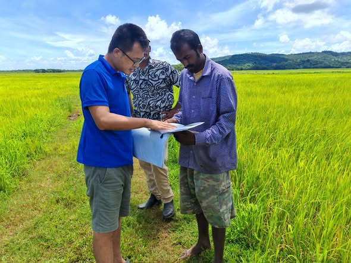

Last Week in the Pacific: Food Security, Education, and China’s Economic Model
On 18 March, PRC Ambassador Lyu Jin met with his Cuban counterpart, H.E. Néstor Enrique Torres Olivera, in Nauru.
This meeting followed the disclosure of U.S.-Cuban negotiations and comes amid Cuba’s economic and energy crisis after Venezuelan oil shipments stopped.
The ambassadors “reaffirmed the strong solidarity between the two nations” and discussed ongoing sanctions against Cuba, coordination on shared concerns, and China’s “steadfast support” for Cuban sovereignty.
Official meetings between ambassadors and foreign counterparts are rare. This monitor has tracked over 320 events and recorded only one other instance.
Summary of PRC Activity
Chinese embassies focused on development and sustainability last week. In the Solomon Islands, embassy officials attended a handover ceremony for a fishery project. In Fiji, Chinese agricultural experts conducted field surveys and demonstrations. The embassy in Kiribati held three education-related events. Ambassadors in Papua New Guinea and Tonga published articles promoting China’s “Two Sessions” and 15th Five-Year-Plan.
This Week’s Big Themes:
Food Security
Chinese diplomats in the Solomon Islands and Fiji focused on food security last week. In the Solomon Islands, Counselor Li Qinghua attended a handover ceremony for boats and outboard engines donated to the East Kwaio Constituency. In Fiji, Chinese agricultural experts conducted field surveys and led demonstrations on rice cultivation techniques for local farmers.
Supporting Events
- Fiji: Agricultural Expert Visit
- Solomon Islands: Fishery Project Delivery
Get Smart
The embassy in Kiribati held three education and career development events last week. Embassy officials delivered a Smart Classroom project and sent a Chinese education team to work with local teachers on curriculum development and preparation for Chinese-language instruction. The embassy also helped fund and provision a career fair as part of “Quantum Leap Week.”
Supporting Events
- Kiribati: School Renovation Project Delivery
- Kiribati: Chinese Education Team Visit
- Kiribati: Career Fair Event
Promoting China’s Two Sessions

Ambassadors in Papua New Guinea and Tonga published articles promoting China’s Two Sessions and 15th Five-Year-Plan. Both pieces argued that China’s state-centric development model is more resilient, effective, and stable than Western alternatives—a contrast the ambassadors sharpened by pointing to geopolitical turbulence in the West.
Supporting Events
- Papua New Guinea: Two Sessions and Five Year Plan Article Promotion
- Tonga: Two Sessions Article Promotion
* The PRC Pacific Embassies Monitor provides systematic, open-source tracking of Beijing’s public diplomatic activities across the nine Pacific Island Countries hosting Chinese missions. The monitor captures official embassy social media and website posts, supplemented by local sources, to offer a weekly structured intelligence report that bridges critical information gaps on regional engagement.